Что называют теоремой?
Если человек обнаружил в математике какую-нибудь закономерность, позволяющую быстро решить ту или иную задачу, то ему не следует говорить о том, что он сделал открытие. Потому что может случиться так, что эта закономерность работает только для определённых случаев, а для других не работает или вовсе решает задачу неправильно.
Чтобы поделиться своим открытием с другими людьми, найденную закономерность следует сформулировать в виде утверждения, а затем доказать это утверждение, приводя неоспоримые факты.
Сформулированное утверждение называют теоремой. А доказательство теоремы состоит из фактов, логических рассуждений и вычислений, которые не оспариваются.
Например, теоремой можно назвать следующее утверждение:
«Если числитель и знаменатель обыкновенной дроби умнóжить на какое-нибудь число, то значение данной дроби не измéнится».
А затем привести такое доказательство:
Пусть, имеется дробь
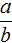
. Умнóжим числитель и знаменатель этой дроби на число с. Тогда полýчится дробь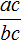
. Докáжем, что дроби и равны. То есть докажем, что равенство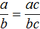
является верным.Для доказательства этого равенства воспользуемся основным свойством пропорции:
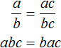
От перестановки мест сомножителей произведение не меняется. Поэтому в получившемся равенстве можно упорядочить правую часть по алфавиту:
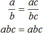
Поскольку равенство является пропорцией, а пропорция это равенство двух отношений, то дроби и
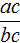
равны. Теорема доказана.Теорема Виета
Французский математик Франсуа Виет выявил интересную взаимосвязь между коэффициентами приведённого квадратного уравнения и корнями этого же уравнения. Эта взаимосвязь представлена в виде теоремы и формулируется так:
Сумма корней приведённого квадратного уравнения x2 + bx + c = 0 равна второму коэффициенту, взятому с противоположным знáком, а произведение корней равно свободному члену.
То есть, если имеется приведённое квадратное уравнение x2 + bx + c = 0, а его корнями являются числа x1 и x2, то справедливы следующие два равенства:

Знак системы (фигурная скобка) говорит о том, что значения x1 и x2 удовлетворяют обоим равенствам.
Покажем теорему Виета на примере приведённого квадратного уравнения x2 + 4x + 3 = 0.
Мы пока не знаем какие корни имеет уравнение x2 + 4x + 3 = 0. Но по теореме Виета можно записать, что сумма этих корней равна второму коэффициенту 4, взятому с противоположным знáком. Если коэффициент 4 взять с противоположным знáком, то получим −4. Тогда:
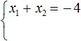
А произведение корней по теореме Виета будет равно свободному члену. В уравнении x2 + 4x + 3 = 0 свободным членом является 3. Тогда:
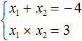
Теперь проверим действительно ли сумма корней равна −4, и равно ли произведение 3. Для этого найдём корни уравнения x2 + 4x + 3 = 0. А для удобства воспользуемся формулами для чётного второго коэффициента:
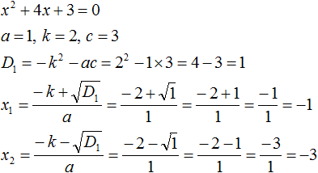
Корнями уравнения являются числа −1 и −3. По теореме Виета их сумма должна была равняться второму коэффициенту уравнения x2 + 4x + 3 = 0, взятому с противоположным знаком. Действительно, так оно и есть. Вторым коэффициентов в уравнении x2 + 4x + 3 = 0 является 4. Если взять его с противоположным знаком и приравнять сумму корней x1 + x2 к этому коэффициенту, то получается верное равенство:
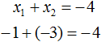
А произведение корней −1 и −3 по теореме Виета должно было равняться свободному члену уравнения x2 + 4x + 3 = 0, то есть числу 3. Видим, что это условие тоже выполняется:
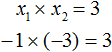
Значит выражение является справедливым.
Рассмотрим квадратное уравнение x2 − 8x + 15 = 0. По теореме Виета сумма корней этого уравнения равна второму коэффициенту, взятому с противоположным знаком. Второй коэффициент равен −8. Если взять его с противоположным знаком, то получим 8. Тогда:
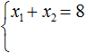
А произведение корней равно свободному члену. В уравнении x2 − 8x + 15 = 0 свободным членом является 15. Тогда:
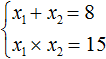
Теперь проверим действительно ли сумма корней равна 8, и равно ли произведение 15. Для этого найдём корни данного уравнения. А для удобства воспользуемся формулами для чётного второго коэффициента. В этот раз пропустим нéкоторые подробные записи:
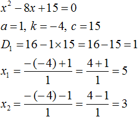
Видим, что корнями уравнения x2 − 8x + 15 = 0 являются числа 5 и 3. Их сумма равна 8. То есть сумма корней равна второму коэффициенту уравнения x2 − 8x + 15 = 0, взятому с противоположным знаком.
А произведение чисел 5 и 3 равно 15. То есть равно свободному члену уравнения x2 − 8x + 15 = 0.
Значит выражение является справедливым.
Замечание. Чтобы теорема Виета выполнялась, квадратное уравнение обязательно должно быть приведённым и иметь корни.
Например, рассмотрим квадратное уравнение x2 − 2x + 4 = 0. Напишем сумму и произведение корней этого уравнения:
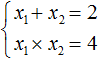
Но уравнение x2 − 2x + 4 = 0 не имеет корней, сумма которых равна 2, а произведение которых равно 4. Убедиться в этом можно, вычислив дискриминант:
D1 = k2 − ac = (−1)2 − 1 × 4 = −3
А значит записывать выражение не имеет смысла.
Теорема Виета полезна тем, что позволяет до начала решения узнать знаки корней уравнения.
Например, запишем для уравнения x2 − 5x + 6 = 0 сумму и произведение его корней. Сумма корней равна второму коэффициенту, взятому с противоположным знаком, а произведение корней равно свободному члену:
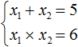
Посмотрев на эти два равенства можно сразу понять, что оба корня должны быть положительными. Потому что произведение x1 × x2 = 6 будет выполняться только в двух случаях: если значения x1 и x2 положительны либо они оба отрицательны. Если эти значения будут отрицательными, то не будет выполняться равенство x1 + x2 = 5, поскольку его правая часть равна положительному числу. А значения x1 и x2 должны удовлетворять как равенству x1 + x2 = 5, так и равенству x1 × x2 = 6.
Ещё одна польза от теоремы Виета в том, что корни можно найти методом подбора. В данном примере корни должны быть такими, чтобы они удовлетворяли как равенству x1 + x2 = 5 так и равенству x1 × x2 = 6. Очевидно, что таковыми являются корни 3 и 2
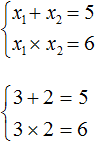
Значит, x1 = 3, x2 = 2
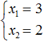
Доказательство теоремы Виета
Пусть дано приведённое квадратное уравнение x2 + bx + c = 0. Если его дискриминант больше нуля, то оно имеет два корня, сумма которых равна второму коэффициенту, взятому с противоположным знаком, а произведение корней равно свободному члену:
Докажем, что равенства x1 + x2 = −b и x1 × x2 = c имеют место быть.
Вспомним формулы корней квадратного уравнения:
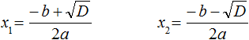
Найдём сумму корней x1 и x2. Для этого подставим в выражение x1 + x2 вместо x1 и x2 соответствующие выражения из правой части формул корней квадратного уравнения. Не забываем, что в приведённом квадратном уравнении x2 + bx + c = 0 старший коэффициент a равен единице. Тогда в процессе подстановки знаменатель станет равен просто 2
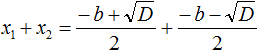
Запишем правую часть в виде дроби с одним знаменателем:
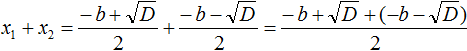
Раскроем скобки в числителе и приведём подобные члены:
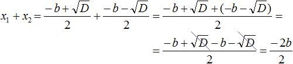
Сократим дробь
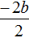
на 2, тогда получим −b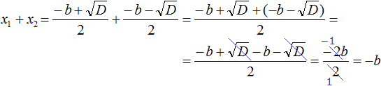
Значит x1 + x2 действительно равно −b
x1 + x2 = −b
Теперь аналогично докажем, что произведение x1 × x2 равно свободному члену c.
Подставим вместо x1 и x2 соответствующие выражения из формул корней квадратного уравнения. Не забываем, что коэффициент a всё ещё равен единице:
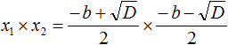
Чтобы перемнóжить дроби, нужно перемнóжить их числители и знаменатели:
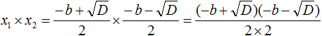
В числителе теперь содержится произведение суммы двух выражений и разности этих же выражений. Воспользуемся тождеством (a + b)(a − b) = a2 − b2. Тогда в числителе полýчится
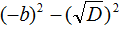
А знаменатель будет равен 4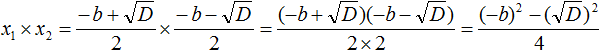
Теперь в числителе выражение (−b)2 станет равно b2, а выражение
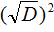
станет равно просто D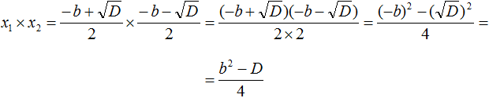
Но D равно b2 − 4ac. Подстáвим это выражение вместо D, не забывая что a = 1. То есть вместо b2 − 4ac надо подставить b2 − 4c
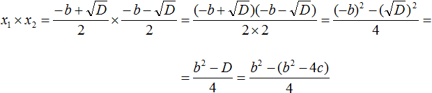
В получившемся выражении раскроем скобки в числителе и приведём подобные члены:
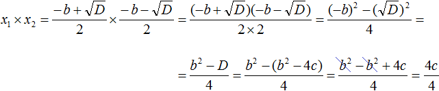
Сократим получившуюся дробь на 4
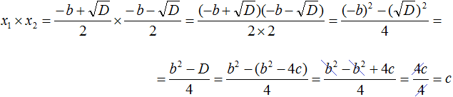
Значит x1 × x2 действительно равно c.
x1 × x2 = c
Таким образом, сумма корней приведённого квадратного уравнения x2 + bx + c = 0 равна второму коэффициенту, взятому с противоположным знáком (x1 + x2 = −b), а произведение корней равно свободному члену (x1 × x2 = c). Теорема доказана.
Теорема, обратная теореме Виета
Когда записана сумма и произведение корней приведённого квадратного уравнения, обычно начинается подбор подходящих корней к этому уравнению. В этот момент в работу включается так называемая теорема, обратная теореме Виета. Она формулируется так:
Если числа x1 и x2 таковы, что их сумма равна второму коэффициенту уравнения x2 + bx + c = 0, взятому с противоположным знáком, а произведение чисел x1 и x2 равно свободному члену уравнения x2 + bx + c = 0, то числа x1 и x2 являются корнями уравнения x2 + bx + c = 0.
Обратные теоремы бывают поставлены так, что их утверждением является заключение первой теоремы.
Так, доказывая теорему Виета мы пришли к заключению, что сумма x1 и x2 равна −b, а произведение x1 и x2 равно c. В обратной же теореме это заключение служит утверждением.
Ранее мы решили уравнение x2 − 5x + 6 = 0 и написали для него такую сумму и произведение корней:
А затем подобрали корни 3 и 2. По сути мы применили теорему, обратную теореме Виета. Числа 3 и 2 таковы, что их сумма равна второму коэффициенту уравнения x2 − 5x + 6 = 0, взятому с противоположным знаком (числу 5), а произведение чисел 3 и 2 равно свободному члену (числу 6). Значит числа 3 и 2 являются корнями уравнения x2 − 5x + 6 = 0.
Пример 2. Решить квадратное уравнение x2 − 6x + 8 = 0 по теореме, обратной теореме Виета.
В данном уравнении a = 1. Значит квадратное уравнение является приведённым. Его можно решить по теореме, обратной теореме Виета.
Сначала запишем сумму и произведение корней уравнения. Сумма корней будет равна 6, поскольку второй коэффициент исходного уравнения равен −6. А произведение корней будет равно 8
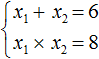
Теперь имея эти два равенства можно подобрать подходящие корни. Они должны удовлетворять как равенству x1 + x2 = 6, так и равенству x1 × x2 = 8
Подбор корней удобнее выполнять с помощью их произведения. Используя равенство x1 × x2 = 8 нужно найти такие x1 и x2, произведение которых равно 8.
Число 8 можно получить если перемножить числа 4 и 2 либо 1 и 8.
\[4 \times 2 = 8 1 \times 8 = 8\]
Но значения x1 и x2 надо подбирать так, чтобы они удовлетворяли не только равенству x1 × x2 = 8, но и равенству x1 + x2 = 6.
Сразу делаем вывод, что значения 1 и 8 не годятся, поскольку они хоть и удовлетворяют равенству x1 × x2 = 8, но не удовлетворяют равенству x1 + x2 = 6.
Зато значения 4 и 2 подходят как равенству x1 × x2 = 8, так и равенству x1 + x2 = 6, поскольку эти значения удовлетворяют обоим равенствам:
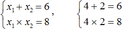
Значит корнями уравнения x2 − 6x + 8 = 0 являются числа 4 и 2.
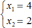
Обратная теорема, как и любая теорема нуждается в доказательстве. Докажем теорему, обратную теореме Виета. Для удобства корни x1 и x2 обозначим как m и n. Тогда утверждение теоремы, обратной теореме Виета примет следующий вид:
Если числа m и n таковы, что их сумма равна второму коэффициенту уравнения x2 + bx + c = 0, взятому с противоположным знáком, а произведение чисел m и n равно свободному члену уравнения x2 + bx + c = 0, то числа m и n являются корнями уравнения x2 + bx + c = 0
Для начала запишем, что сумма m и n равна −b, а произведение mn равно c
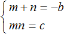
Чтобы доказать, что числа m и n являются корнями уравнения x2 + bx + c = 0, нужно поочередно подстáвить буквы m и n в это уравнение вместо x, затем выполнить возможные тождественные преобразования. Если в результате преобразований левая часть станет равна нулю, то это будет означать, что числа m и n являются корнями уравнения x2 + bx + c = 0.
Помимо букв m и n нам нужно знать чему равен параметр b. Выразим его из равенства m + n = −b. Легче всего это сделать, умножив обе части этого равенства на −1
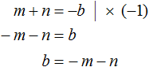
Теперь всё готово для подстановок. Подстáвим m в уравнение x2 + bx + c = 0 вместо x, а выражение −m − n подставим вместо b
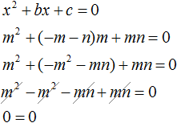
Видим, что при x = m получается верное равенство. Значит число m является корнем уравнения x2 + bx + c = 0.
Аналогично докажем, что число n является корнем уравнения x2 + bx + c = 0. Подставим вместо x букву n, а вместо c подставим mn, поскольку c = mn.
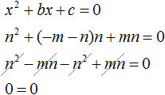
Видим, что при x = n тоже получается верное равенство. Значит число n является корнем уравнения.
Следовательно, числа m и n являются корнями уравнения x2 + bx + c = 0.
Примеры решения уравнений по теореме, обратной теореме Виета
Пример 1. Решить квадратное уравнение x2 − 4x + 4 = 0 по теореме, обратной теореме Виета.
Запишем сумму корней x1 и x2 и приравняем её к второму коэффициенту, взятому с противоположным знаком. Также запишем произведение корней x1 и x2 и приравняем его к свободному члену:
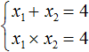
В данном примере очевидно, что корнями являются числа 2 и 2. Потому что их сумма равна 4 и произведение равно 4
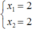
Значение x1 совпадает с x2. Это тот случай, когда квадратное уравнение имеет только один корень. Если мы попробуем решить данное уравнение с помощью формул корней квадратного уравнения, то обнаружим что дискриминант равен нулю, и корень вычисляется по формуле
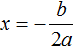
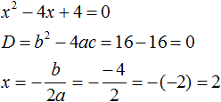
Данный пример показывает, что теорема обратная теореме Виета, работает и для уравнений, имеющих только один корень. Признаком того, что квадратное уравнение имеет только один корень является то, что значения x1 и x2 совпадают.
Пример 2. Решить уравнение x2 + 3x + 2 = 0 по теореме, обратной теореме Виета.
Запишем сумму и произведение корней данного уравнения:
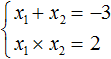
Теперь подберём значения x1 и x2. Здесь начинается самое интересное. Произведение корней равно 2. Число 2 можно получить перемножив 1 и 2. Но сумма корней x1 + x2 равна отрицательному числу −3. Значит значения 1 и 2 не подходят.
Сумма бывает отрицательной если оба слагаемых отрицательны либо отрицательным является одно слагаемое, модуль которого больше.
Если подберём корни с разными знаками, то не будет выполняться равенство x1 × x2 = 2.
Если подберем положительные корни, то будет выполняться равенство x1 × x2 = 2, но не будет выполняться равенство x1 + x2 = −3.
Очевидно, что корнями являются два отрицательных числа. Произведение отрицательных чисел есть положительное число. А сумма отрицательных чисел есть отрицательное число.
Тогда равенствам будут удовлетворять числа −1 и −2.
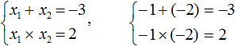
Итак, корнями являются числа −1 и −2
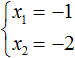
Пример 3. Решить уравнение x2 + 16x + 15 = 0 по теореме, обратной теореме Виета.
Запишем сумму и произведение корней данного уравнения:
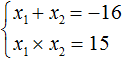
Как и в прошлом примере сумма корней равна отрицательному числу, а произведение корней — положительному числу.
Произведение бывает положительным если оба сомножителя положительны либо оба сомножителя отрицательны. Первый вариант отпадает сразу, поскольку сумма корней равна отрицательному числу. Тогда получается, что оба корня будут отрицательными. Попробуем подобрать их.
Число 15 можно получить, если перемножить числа −1 и −15 или (−3) и (−5). В данном случае подходит первый вариант, поскольку сумма чисел −1 и −15 равна −16, а их произведение равно 15. Значит корнями уравнения x2 + 16x + 15 = 0 являются числа −1 и −15
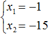
Пример 4. Решить уравнение x2 − 10x − 39 = 0 по теореме, обратной теореме Виета.
Запишем сумму и произведение корней данного уравнения:
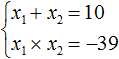
Произведение корней равно отрицательному числу. Значит один из корней является отрицательным. Число −39 можно получить если перемножить числа −3 и 13 либо −13 и 3. Из этих комбинаций больше годится комбинация −3 и 13, поскольку при перемножении этих чисел получается −39, а при сложении 10
Значит корнями уравнения x2 − 10x − 39 = 0 являются числа −3 и 13
Пример 5. Первый корень уравнения x2 + bx + 45 = 0 равен 15. Найти второй корень этого уравнения, а также значение коэффициента b.
По теореме Виета произведение корней приведённого квадратного уравнения равно свободному члену. В данном случае это произведение равно 45
x1 × x2 = 45
При этом один из корней уже известен — это корень 15.
15 × x2 = 45
Тогда второй корень будет равен 3, потому что число 45 получается, если 15 умножить на 3
\[15 \times 3 = 45\]
Значит x2 = 3
Этот второй корень также можно было бы получить, выразив из равенства 15 × x2 = 45 переменную x2
Теперь определим значение коэффициента b. Для этого напишем сумму корней уравнения:
\[15 + 3 = 18\]
По теореме Виета сумма корней приведенного квадратного уравнения равна второму коэффициенту, взятому с противоположным знаком. Если сумма корней равна 18, а 18 это положительное число, то в самóм уравнении этот коэффициент будет отрицательным:
x2 − 18x + 45 = 0
Значит b = −18.
Обычно решение к такой задаче записывают так. Сначала записывают основную теорему Виета в виде суммы и произведения корней:
Затем в это выражение подставляют имеющиеся известные значения. В нашем случае известно, что первый корень равен 15, а свободный член уравнения x2 + bx + 45 = 0 равен 45
Из этой системы следует найти x2 и b. Выразим эти параметры:
Из этой системы мы видим, что x2 равно 3. Подставим его в первое равенство:
Теперь из первого равенства мы видим, что −b равно 18
Но нас интересует b, а не −b. Следует помнить, что −b это −1b. Чтобы найти b нужно 18 разделить на −1. Тогда b станет равно −18
Этот же результат можно получить если в выражении умножить первое равенство на −1
Теперь возвращаемся к исходному уравнению x2 + bx + 45 = 0 и подставляем найденное значение b
Выполним умножение −18 на x. Получим −18x
Раскроем скобки:
Пример 6. Используя теорему Виета, написать приведённое квадратное уравнение, корнями которых являются числа 2 и 8.
В этом задании корни уже известны. То есть x1 = 2, x2 = 8. По ним надо составить квадратное уравнение вида x2 + bx + c = 0.
Запишем сумму и произведение корней:
По теореме Виета сумма корней приведённого квадратного уравнения равна второму коэффициенту, взятому с противоположным знаком. Если сумма корней 2 и 8 равна 10, то в самóм уравнении число 10 должно быть с противоположным знаком. Значит b = −10.
Произведение корней по теореме Виета равно свободному члену. У нас это произведение равно 16.
Значит b = −10, c = 16. Отсюда:
x2 − 10x + 16 = 0
Пример 7. Используя теорему Виета, написать приведённое квадратное уравнение, корнями которых являются числа и .
Запишем сумму и произведение корней:
Сумма корней равна 2. Тогда в уравнении второй коэффициент будет равен −2. А произведение корней равно −1. Значит свободный член будет равен −1. Тогда:
x2 − 2x − 1 = 0
Когда квадратное уравнение неприведённое
Теорема Виета выполняется только тогда, когда квадратное уравнение является приведённым.
Если квадратное уравнение не является приведённым, но всё равно возникла необходимость применить теорему Виета, то обе части неприведённого квадратного уравнения следует разделить на коэффициент, который располагается перед x2.
Если к примеру в квадратном уравнении ax2 + bx + c = 0 коэффициент a не равен единице, то данное уравнение является неприведённым. Чтобы сделать его приведённым, надо разделить обе его части на коэффициент, который располагается перед x2, то есть на a
Получилось уравнение , которое является приведённым. В нём второй коэффициент равен , а свободный член равен . Тогда сумма и произведение корней будут выглядеть так:

Например, решим квадратное уравнение 4x2 + 5x + 1 = 0. Это уравнение не является приведённым. Приведённым оно станет, если разделить обе его части на коэффициент, который располагается перед x2, то есть на 4
Получили приведённое квадратное уравнение. В нём второй коэффициент равен , а свободный член \(\frac{1}{4}\). Тогда по теореме Виета имеем:
Отсюда методом подбора находим корни −1 и
Возможно этот метод вы редко будете использовать при решении квадратных уравнений. Но знать о нём не помешает.
Пример 2. Решить квадратное уравнение 3x2 − 7x + 2 = 0
Данное уравнение не является приведённым, а значит его пока нельзя решить по теореме, обратной теореме Виета.
Сделаем данное уравнение приведенным. Разделим обе части на коэффициент, который располагается перед x2
Получили уравнение . Запишем сумму и произведение корней этого уравнения:
Отсюда методом подбора находим корни 2 и \(\frac{1}{3}\)
Пример 3. Решить квадратное уравнение 2x2 − 3x − 2 = 0
Это неприведённое квадратное уравнение. Чтобы сделать его приведённым, нужно разделить обе его части на 2. Сделать это можно в уме. Если 2x2 разделить на 2, то полýчится x2
Далее если −3x разделить на 2, то полýчится . Чтобы видеть где коэффициент, а где переменная, такое выражение записывают в виде
Далее если −2 разделить на 2, то полýчится −1
Прирáвниваем получившееся выражение к нулю:
Теперь применяем теорему Виета. Сумма корней будет равна второму коэффициенту, взятому с противоположным знáком, а произведение корней свободному члену:
Отсюда методом подбора находим корни 2 и \(-\frac{1}{2}\)
Задания для самостоятельного решения
Показать решение
Показать решение
Показать решение
Показать решение
Показать решение
Показать решение
Показать решение
Показать решение
Показать решение